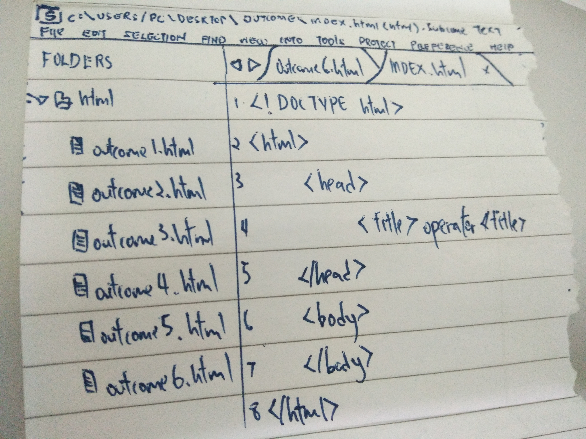
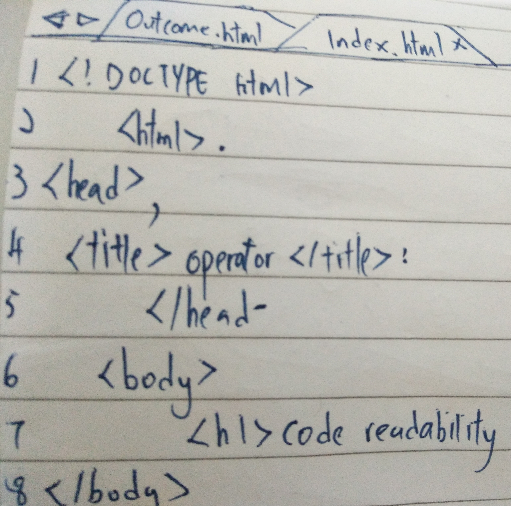
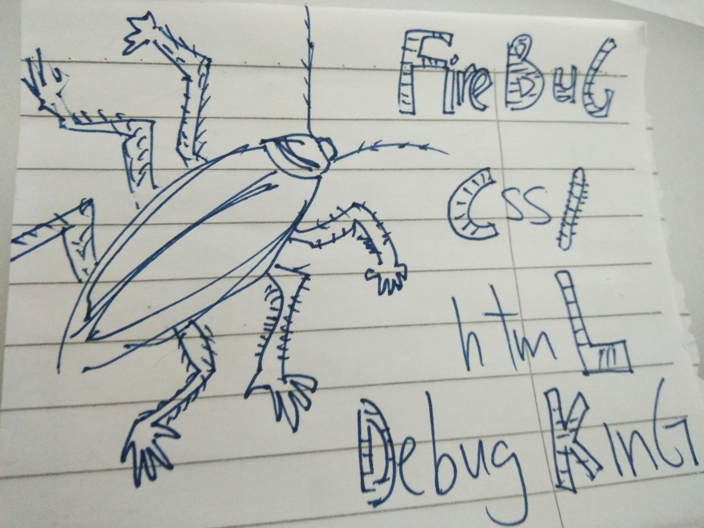
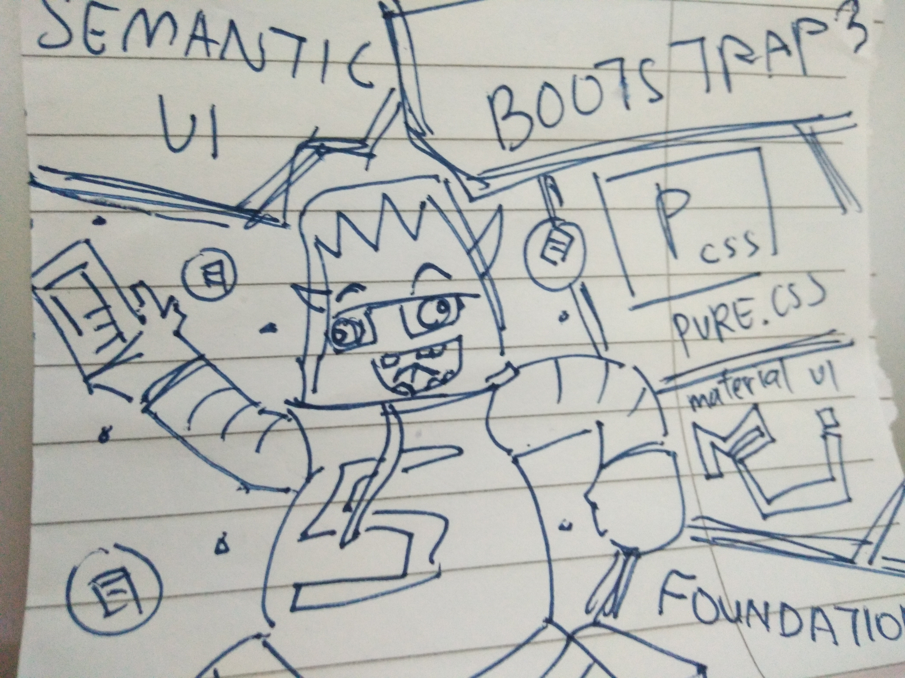

In a programming team, code readability is very importance because a readability code can let our teammate more quickly to understand what we are coding so they can modification or maintain in short time. After that, if our code is not readability, it will very hard to debug if our code have loophole and even need to create a new code and we would make our company loss a lot of money, time and human cost.
The modern coding guide for web pages development is Code Guide by @mdo, a popular coding guide for everyone espacially for beginner, the coding guide webpage is use for guide us for coding, this coding guide will teach us how to coding with orderlines and avoid some common mistakes.
The one of my favourites coding guide is Code Guide by @mdo, Code Guide by @mdo is my favourites coding guide because the course on this webpage is very simple the understanding and the layout or design on this webpage is very modern.
Some tools used to debug HTML or CSS problem is Firebug, a debugging tools free add-on for Mozilla Firefox, it's contain a tons of powerful and easy to use features for web developer. Next, closing Thoughts it can help for provede us with straight forward information to better code page. And next is inspect element from Google Chrome, a very convenience tools, if our coding have error we could get the error on console log and debug it.
A version control tools can solve team collaboration problems, it is GITHUB, GITHUB is a platform for everyone to use, internet hosting service or web-based, GIT is an open source version control system. It's allows developers to easily collaborate, so every software partner can manage their own part for finish and debug project in shortest time and we can download a new version of software, make changes, upload new revision and every developer can see the change and download it. But project might conflict with other partner sometime cause they modified the same code at a project.
The CSS framework i like to recommended is Semantic ui. Semantic ui a software framework for let us can creating webpage with more faster and easier. A css framewoek normally will contain grid, a set of button, icon, form and graphical user interface. Grid is a system use for make webpage can change it layout on any device. Graphical user interface is meant like animation effect and slideshow. The special of Semantic UI is it's contain a lot of distinctive icon, image, and button like flag logo icon, and Semantic UI is very suitable to beginner because it is very easy to use.
